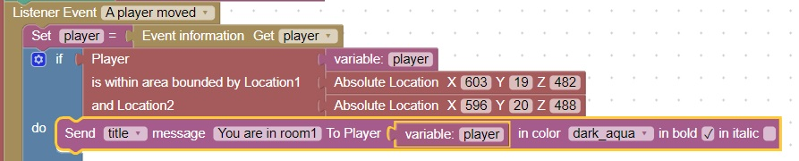
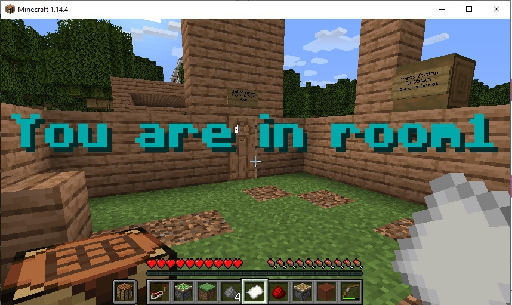

Player in Area
Rather than detecting if a player is at a certain location, it may make more sense to detect if the player is in room
By picking 2 locations at opposite corners of a room, you can define the area the room is contained in.

It will look like this:
